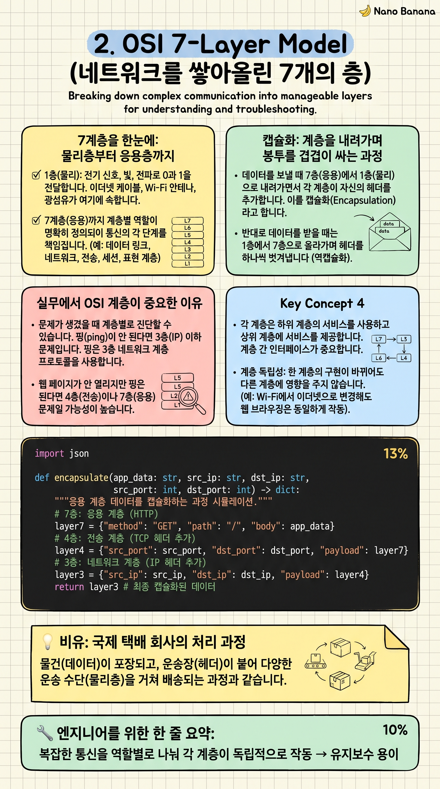

OSI 7-Layer Model

🎯 학습 목표
- OSI 7계층을 순서대로 나열하고 각 역할을 설명할 수 있다
- HTTP, TCP, IP, 이더넷이 각각 어느 계층에 속하는지 알 수 있다
- 데이터가 계층을 내려가며 헤더가 추가되는 캡슐화 과정을 이해한다
- 왜 계층 구조가 소프트웨어 개발에 유리한지 설명할 수 있다
복잡한 건물을 기초 공사, 골조, 배관, 전기, 인테리어 순서로 나눠 짓듯이, 네트워크 통신도 역할별 계층으로 나뉩니다. OSI(Open Systems Interconnection) 모델은 이 계층 구조를 7단계로 정의한 국제 표준입니다.
계층 구조의 핵심 장점은 '독립성'입니다. Wi-Fi를 LTE로 바꿔도 HTTP 코드는 수정할 필요가 없습니다. 물리 계층(Wi-Fi↔LTE)만 바뀌고 상위 계층(HTTP)은 그대로 동작합니다. 레고 블록처럼 각 층을 독립적으로 교체할 수 있습니다.
실무에서 OSI 7계층을 항상 완벽히 외울 필요는 없지만, 문제가 생겼을 때 '어느 계층의 문제인가'를 파악하면 디버깅 속도가 극적으로 빨라집니다.
핵심 내용
7계층을 한눈에: 물리층부터 응용층까지
1층(물리): 전기 신호, 빛, 전파로 0과 1을 전달합니다. 이더넷 케이블, Wi-Fi 안테나, 광섬유가 여기에 속합니다.
2층(데이터 링크): 같은 네트워크 내 기기 간 통신을 담당합니다. MAC 주소로 기기를 구분합니다. 이더넷, Wi-Fi 프로토콜이 여기 있습니다.
3층(네트워크): 서로 다른 네트워크 간 경로를 찾습니다. IP 주소와 라우터가 이 층의 주인공입니다. 4층(전송): 종단 간 신뢰성 있는 데이터 전달을 담당합니다. TCP와 UDP가 여기 있습니다. 5~6층(세션·표현): 암호화, 데이터 형식 변환을 담당합니다. 7층(응용): 사용자와 직접 맞닿는 계층. HTTP, WebSocket, RTSP, FTP가 모두 여기 있습니다.
캡슐화: 계층을 내려가며 봉투를 겹겹이 싸는 과정
데이터를 보낼 때 7층(응용)에서 1층(물리)으로 내려가면서 각 계층이 자신의 헤더를 추가합니다. 이를 캡슐화(Encapsulation)라고 합니다.
예를 들어 HTTP GET 요청을 보낼 때, 7층에서 HTTP 헤더 추가 → 4층에서 TCP 헤더 추가 → 3층에서 IP 헤더 추가 → 2층에서 이더넷 헤더 추가 → 1층에서 전기 신호로 전송됩니다.
수신 측에서는 반대 순서로 헤더를 하나씩 벗겨내는 역캡슐화(Decapsulation)가 일어납니다. 택배 상자를 열면 내부 포장지, 그 안에 또 포장지, 최종적으로 상품이 나오는 것과 같습니다.
실무에서 OSI 계층이 중요한 이유
문제가 생겼을 때 계층별로 진단할 수 있습니다. 핑(ping)이 안 된다면 3층(IP) 이하 문제입니다. 핑은 되지만 HTTP가 안 된다면 7층(응용) 문제입니다. 이 구분만 알아도 디버깅 시간이 절반으로 줄어듭니다.
이 코스에서 배우는 기술들의 위치입니다: REST/HTTP/WebSocket/RTSP/WebRTC = 7층(응용), TCP/UDP = 4층(전송), IP = 3층(네트워크), Wi-Fi/이더넷 = 2층(데이터 링크), 물리 신호 = 1층(물리).
실무에서는 OSI보다 TCP/IP 4계층 모델(응용/전송/인터넷/네트워크 접근)을 더 자주 씁니다. OSI는 교육용 개념 모델, TCP/IP는 실제 인터넷의 구현 모델이라고 이해하면 됩니다.
💡 비유로 이해하기
국제 택배를 보낼 때를 생각해보세요. 상품(데이터)을 내부 포장재로 감싸고(응용 계층), 송장을 붙이고(전송/네트워크 계층), 외부 박스에 담고(데이터 링크 계층), 트럭에 실어 물리적으로 이동합니다(물리 계층).
각 단계는 독립적입니다. 물류 회사가 트럭에서 비행기로 운송 수단을 바꾸더라도(물리 계층 변경), 박스 안 송장이나 상품은 그대로입니다(상위 계층 불변). 이것이 계층 구조의 힘입니다.
수신 측에서는 역순으로 포장을 풉니다. 외부 박스 제거 → 송장 확인 → 내부 포장재 제거 → 상품 수령. 네트워크의 역캡슐화와 완전히 같은 구조입니다.
💻 코드 예시
캡슐화·역캡슐화 과정을 Python 딕셔너리로 시뮬레이션합니다. 실제 소켓 라이브러리는 이 과정을 자동으로 처리하지만, 안에서 무슨 일이 일어나는지 직접 눈으로 확인해봅니다.
import json
def encapsulate(app_data: str, src_ip: str, dst_ip: str,
src_port: int, dst_port: int) -> dict:
"""응용 계층 데이터를 캡슐화하는 과정 시뮬레이션."""
# 7층: 응용 계층 (HTTP)
layer7 = {"method": "GET", "path": "/", "body": app_data}
# 4층: 전송 계층 (TCP 헤더 추가)
layer4 = {
"tcp_header": {"src_port": src_port, "dst_port": dst_port,
"seq": 1000, "ack": 0, "flags": "SYN"},
"data": layer7
}
# 3층: 네트워크 계층 (IP 헤더 추가)
layer3 = {
"ip_header": {"src_ip": src_ip, "dst_ip": dst_ip, "ttl": 64},
"data": layer4
}
# 2층: 데이터 링크 계층 (이더넷 헤더 추가)
layer2 = {
"eth_header": {"src_mac": "AA:BB:CC:DD:EE:FF",
"dst_mac": "11:22:33:44:55:66"},
"data": layer3
}
return layer2 # 1층(물리)으로 전기 신호 전송
def decapsulate(frame: dict) -> str:
"""수신 측에서 헤더를 벗겨내는 과정."""
layer3 = frame["data"] # 이더넷 헤더 제거
layer4 = layer3["data"] # IP 헤더 제거
layer7 = layer4["data"] # TCP 헤더 제거
return layer7["body"] # 최종 응용 데이터 반환
# ── 실행 ──────────────────────────────────────────────────
frame = encapsulate(
app_data="Hello, World!",
src_ip="192.168.1.5", dst_ip="93.184.216.34",
src_port=54321, dst_port=80
)
print("캡슐화 결과 (전송 직전 프레임):")
print(json.dumps(frame, indent=2, ensure_ascii=False))
received = decapsulate(frame)
print(f"\n역캡슐화 후 수신 데이터: {received}")encapsulate 함수는 7→4→3→2층 순서로 각 계층의 헤더를 추가합니다. decapsulate는 반대 순서로 헤더를 벗겨냅니다. 실제 운영체제의 TCP/IP 스택이 정확히 이 과정을 수행하며, 우리가 쓰는 requests, socket 라이브러리가 이 복잡한 과정을 한 줄 코드로 추상화해줍니다.
🏭 현업에서의 평가
✅ 시니어가 보는 것
- TCP/UDP가 4계층, HTTP/WebSocket이 7계층에 있다는 것을 즉시 대답
- 계층화의 이점: 독립성, 교체 용이성을 구체적 예시로 설명
- 캡슐화/역캡슐화 개념 이해
⚠️ 레드 플래그
- OSI를 외우기만 하고 '왜 계층으로 나누는가'를 설명하지 못함
- TCP와 HTTP가 같은 계층이라고 생각하는 경우
🎤 예상 인터뷰 질문
- HTTP는 OSI 몇 계층인가요? TCP는요? 그 차이가 무엇을 의미하나요?
- Wi-Fi를 LTE로 바꿔도 HTTP 코드가 동작하는 이유를 OSI 계층으로 설명해보세요.
✨ 핵심 요약
계층화의 이유
복잡한 통신을 역할별로 나눠 각 계층이 독립적으로 작동 → 유지보수 용이
7계층 위치
HTTP/WebSocket/RTSP = 7층(응용), TCP/UDP = 4층(전송), IP = 3층(네트워크)
캡슐화
데이터가 7층→1층으로 내려가며 각 계층이 헤더를 추가하는 과정
역캡슐화
수신 측에서 1층→7층으로 올라가며 헤더를 하나씩 제거하는 과정
독립성의 힘
Wi-Fi→LTE 변경해도 HTTP 코드 수정 불필요 (물리층만 변경, 응용층 불변)
TCP/IP 4계층
실무에서는 OSI 7층보다 TCP/IP 4층 모델(응용/전송/인터넷/네트워크 접근)을 더 자주 사용